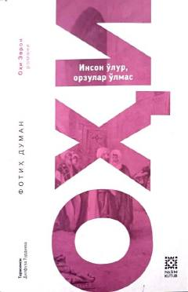

IOInson hayoti va uning oʻlmas orzulari haqidagi falsafiy va maʼnaviy asar.
Ushbu asar turk yozuvchisi Fotih Duman qalamiga mansub boʻlib, inson hayoti, orzular va maʼnaviy qadriyatlar haqida hikoya qiladi. Kitobda muallifning hayotiy tajribalari va falsafiy qarashlari oʻz aksini topgan. Asar Dilfuza Turdiyeva tomonidan turk tilidan oʻzbek tiliga tarjima qilingan.